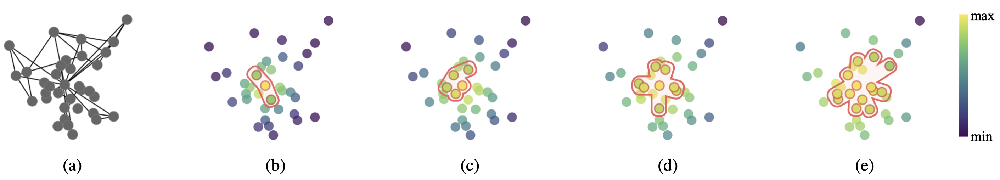
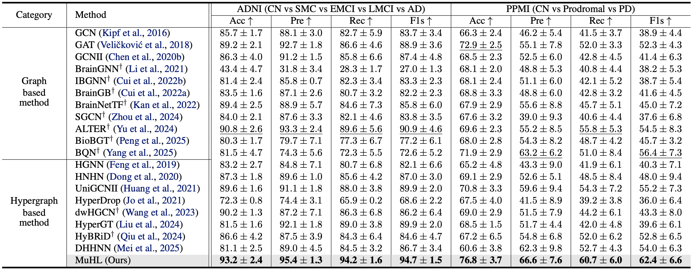
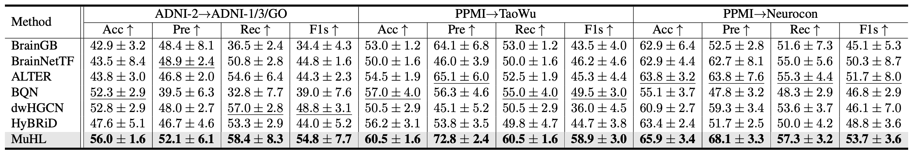
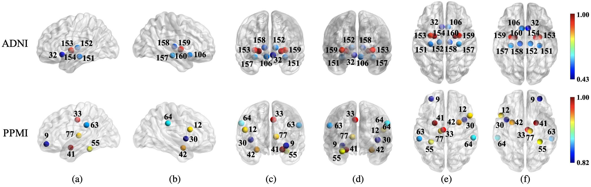
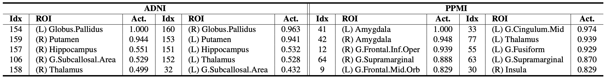
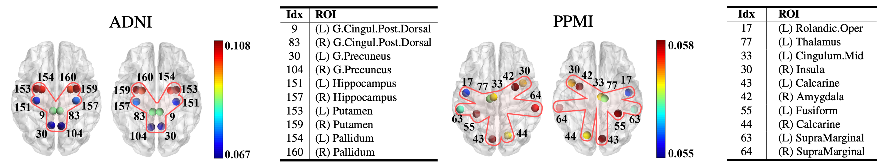
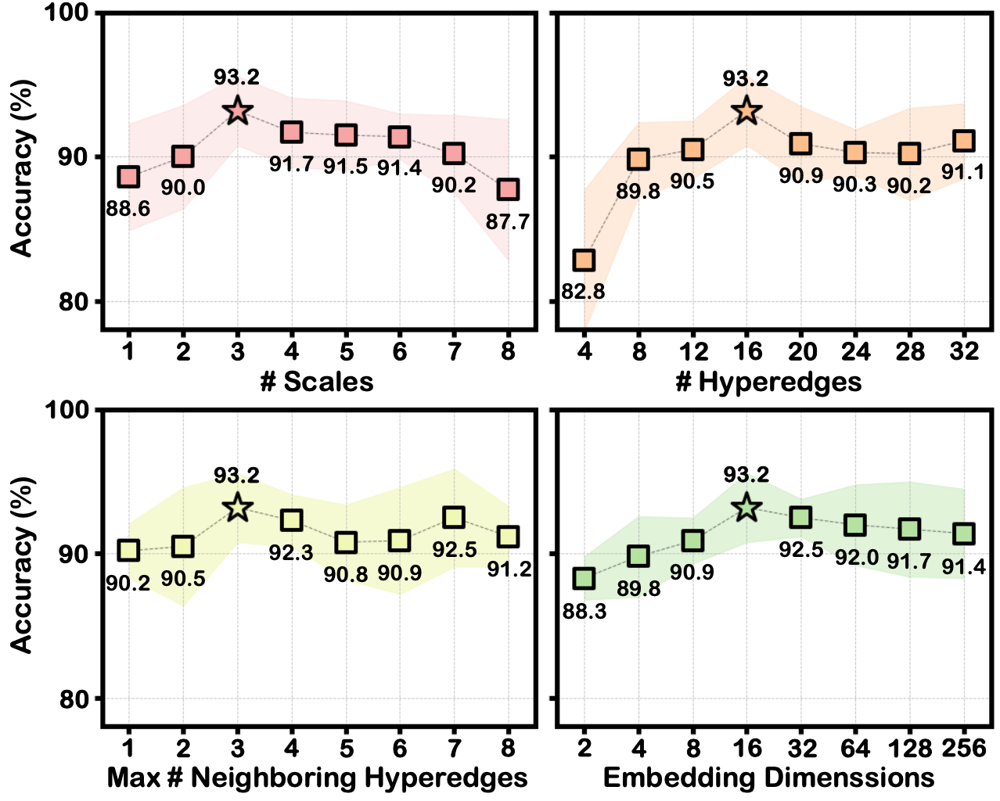
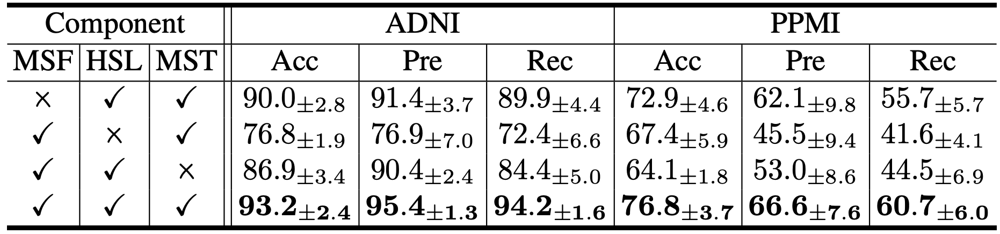

Figure: The original graph with pairwise edges is shown in (a), and from fine scale (b) to coarse scale (e), hyperedges adaptively expand to include more nodes, moving from localized connections to broader groupings that capture global structural similarity. Similar colors indicate potentially similar regions, while the red contour represents the sparsely constructed hyperedge at each scale, determined by the corresponding smoothed features.

Table: Brain network classification performance on the ADNI and PPMI datasets evaluated using 5 fold cross-validation. The best results are shown in bold, and the second-best results are underlined. (†: Methods for brain network analysis)

Table: Zero-shot classification performance across datasets and acquisition phases. MuHL and baselines are trained on a source dataset or phase and directly evaluated on unseen target datasets or phases without fine-tuning. Specifically, for PD, models are trained on PPMI and evaluated on TaoWu and Neurocon, while for AD, models are trained on ADNI-2 and evaluated on 1/3/GO.


Figure: Visualization of top-10 ROIs with the highest relative hyperedge importance on the ADNI (top) and PPMI (bottom) datasets. (a)/(b): outer views of left/right hemishpere, (c)/(d): front/rear views, (e)/(f): top/bottom views. Node color reflects the relative contribution of each ROI based on aggregated hyperedge weights.

Figure: Visualization of the top-10 ROIs associated with the most important hyperedge for top/bottom views in the ADNI and PPMI studies, based on the sum of node activations for each hyperedge. Node color indicates activation value (i.e., weight) per node within the hyperedge.

Figure: Sensitivity studies of crucial hyperparameters in MuHL on the ADNI dataset.

Table: Ablation study of MuHL components on both datasets.
In this work, we proposed MuHL, a novel hypergraph framework to adaptively model high-order relationships in brain networks. By leveraging multi-resolution graph representations and dynamically constructing hyperedges, our method effectively captures complex inter-regional dependencies beyond pairwise connections. Extensive experiments on the ADNI and PPMI datasets show that MuHL demonstrates superiority as evidenced by improved performance in AD- and PD-specific stages classification. Furthermore, the trained hypergraph identifies hub ROIs linked to disease progression across both AD and PD, showcasing the potential of adaptive hypergraph learning as a powerful tool for analyzing diverse neurodegenerative disorders.
@inproceedings{sim2026learning,
title={Learning Multi-Scale Hypergraph for High-Order Brain Connectivity Analysis},
author={Sim, Jaeyoon and Hwang, Soojin, and Baek, Seunghun and Wu, Guorong and Kim, Won Hwa},
booktitle={Forty-third International Conference on Machine Learning},
year={2026}
}